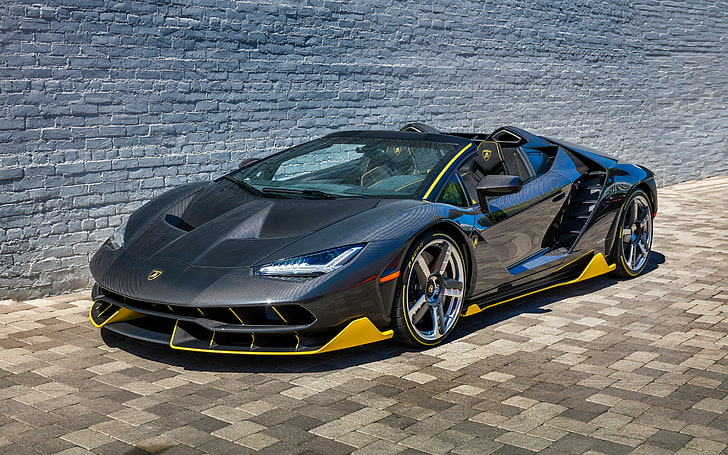

Centenario

Production limitée: La Lamborghini Centenario est une hypercar à production extrêmement limitée. Seules 40 unités ont été produites : 20 coupés et 20 roadsters. Son exclusivité en fait l'un des modèles Lamborghini les plus rares.
Design: Le Centenario présente un design hautement aérodynamique et agressif, caractérisé par des lignes pointues,
des prises d'air massives et un aileron arrière actif. Le design est un hommage à la longue histoire d'innovation et de performances extrêmes de Lamborghini.
Châssis et construction : La carrosserie du Centenario est entièrement construite en fibre de carbone, garantissant une structure ultra légère mais solide.
Moteur : Le Centenario est propulsé par un moteur V12 atmosphérique de 6,5 litres qui produit 770 chevaux. Il est couplé à une transmission automatique à 7 rapports à tige de changement de vitesse indépendante (ISR) et à une transmission intégrale. Performance: Grâce à son moteur puissant et à sa construction légère, le Centenario peut accélérer de 0 à 60 mph en seulement 2,8 secondes et atteindre une vitesse de pointe de plus de 217 mph (350 km/h). Ses capacités de maniabilité et de virage sont tout aussi impressionnantes.
Intérieur: L'intérieur du Centenario est une combinaison de matériaux haut de gamme et de technologie de pointe. Il est composé de cuir de qualité supérieure, de fibre de carbone et d'Alcantara. Le système d’infodivertissement est moderne et convivial. Fonctionnalités avancées : Le Centenario comprend une gamme de fonctionnalités avancées, telles que l'aérodynamique adaptative, qui s'ajustent pour améliorer l'appui et la stabilité à grande vitesse. Il dispose également de roues arrière directrices pour une agilité améliorée.Héritage : La Lamborghini Centenario est considérée comme l'un des modèles Lamborghini les plus extrêmes et les plus exclusifs jamais produits. Il représente le summum des prouesses et des performances techniques de Lamborghini. Collection : En raison de son extrême rareté et de son design unique, le Centenario est très recherché par les collectionneurs et les passionnés. Elle est devenue une pièce de collection prisée dans le monde des hypercars. Variante Roadster : En plus du coupé, Lamborghini a également produit une variante roadster du Centenario, offrant une expérience de conduite en plein air. La Lamborghini Centenario est une véritable hypercar qui démontre l'engagement de Lamborghini à repousser les limites de la performance et du design. Ses quantités de production limitées et sa technologie de pointe ont solidifié son statut d'automobile légendaire et hautement collectionnable.